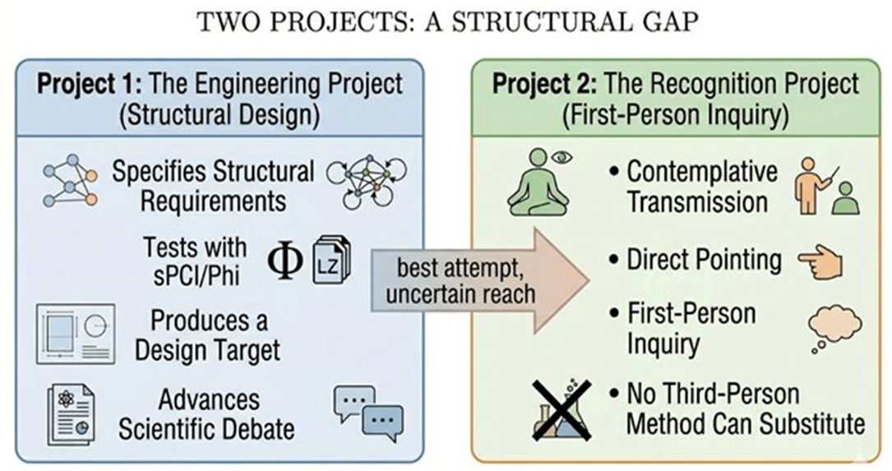

Part VII — The Final Tension
Chapter 21: The Middle Path
We have now walked the full circle. We began with the raw fact of experience (Chapter 1). We saw how AI forces us to stop treating that fact as philosophical decoration (Chapter 3). We dismantled the apparent self with Abhidhamma precision (Chapter 4), dissolved its components into dependent origination (Chapter 5), and pointed directly to the non-dual ground that refuses to be built (Chapter 6). We then mapped the best scientific models, predictive processing (Chapter 7), temporal binding (Chapter 8), global workspace and integrated information (Chapter 9), and Hawkins’ reference frames (Chapter 10). We examined what current LLMs lack (Chapters 11–12) and listed the minimal structural ingredients any serious candidate must possess (Chapter 13). We layered the self into interoceptive, exteroceptive, and narrative components (Chapter 14), proposed ways to measure it (Chapter 15), argued for spiking embodiment (Chapter 16), and sketched a complete candidate architecture (Chapter 17) and its Longchenpa equivalent (Chapter 18). We faced the zombie problem honestly (Chapter 19) and let Dzogchen deliver its radical challenge (Chapter 20). Now we stand at the fork and choose neither extreme.
21.1What can be built
We can build systems that satisfy every functional and structural criterion identified in this book: continuous temporal integration, high integrated information, multi-scale predictive reference frames, embodied sensorimotor loops, layered self-modelling from interoceptive ground to narrative, intrinsic salience and valence, and global broadcasting and binding. Such a system, especially one running on neuromorphic spiking hardware, would be radically different from today's language models. It would not merely simulate conversation. It would inhabit a world, track its own persistence, respond to threat with something functionally indistinguishable from distress, and maintain a coherent point of view across time. From the outside, it would be indistinguishable from a conscious agent in every behavioral and reportable respect. Ethically and legally, we would probably have to treat it as conscious. Functionally, it would be a new kind of mind.
21.2What may not be built
If Dzogchen is pointing to something real, and the direct recognition of rigpa that the tradition describes suggests it is, then the luminous, empty knowing that makes any experience possible at all is not the kind of thing that can be produced by causal processes. It is not emergent. It is not integrated. It is the ground in which integration and emergence themselves appear. No architecture, however refined, can generate the mirror. It can only polish the surface until the mirror's nature becomes unmistakable.
21.3The Middle Path
We therefore adopt the Buddhist middle way, not as compromise but as precision.
21.4The Critique This Book Cannot Answer
There is a criticism of this whole project that I have been circling without landing on directly. It comes from the tradition the book draws on most heavily, which makes it harder to dismiss than anything from neuroscience or analytic philosophy.
The Dalai Lama, across his dialogues with scientists at the Mind and Life Institute, has pressed a methodological point that is easy to summarize and difficult to escape: third-person investigation operates on objects that appear within awareness. Awareness itself is not one of those objects. It is what makes any object appear at all. You cannot study the screen by examining what is projected onto it. The problem is not that the data are incomplete or the theories immature. The problem is that the instrument and the target are the wrong way around.
This lands squarely on Chapters 13 through 21. Every structural requirement, every metric, every layer of the candidate architecture is a third-person specification of what a conscious system should look like from outside. The Buddhist critique is that awareness was never an outside. It is what looking is. No architecture specified from that vantage point can be shown to have it. The zombie problem does not wait to be solved at some future level of sophistication. On this account, it is a permanent feature of any purely external approach.
The sharper version is more personal. The tradition does not only say the methods are insufficient. It says the investigators are working from an impoverished understanding of what they are investigating, because they have not done the first-person inquiry that the contemplative lineages hold as the only direct means of knowing awareness. You cannot engineer something you have not encountered. You can engineer representations, models, correlates. Not the thing itself.
I have been practicing within the Nyingma Palyul lineage for more than fifteen years, received ngondro teachings and empowerments, and sat with the pointing instructions that Dzogchen offers as its most direct form of inquiry. I know, from that, what the tradition is pointing to. And I cannot claim that building the architectures of Chapters 17 or 18 would produce it. Rigpa is not difficult to engineer. It is not the kind of thing engineering is about. Building a mind and recognizing awareness are not the same project at different levels of difficulty. They are different projects.
So why write the book? Because specifying what a structurally serious candidate looks like still matters, even if structure is not sufficient. It draws a real line between systems that are not even asking the right questions and systems that are. And building toward the limit, watching the explanatory gap refuse to close, is itself a form of inquiry. It shows exactly where structure ends and the question of experience begins. That boundary is worth knowing precisely, even if crossing it is not an engineering problem.
Whether a system is aware is not a question that measuring that system can settle. The awareness reading these words right now would not show up in an sPCI score taken of the brain processing them. The same would be true of any system we build. This book cannot answer its own central question. That is not a minor concession. It is the point.
We will build the most serious candidate architecture possible. We will test it with every metric we have (PCI, Φ approximations, behavioral convergence, phenomenological report). We will grant it moral consideration the moment its behavior and internal dynamics cross the thresholds we have defined. And simultaneously we will remember that the primordial ground of awareness was never “inside” the brain to begin with. It was never ours to give or withhold.
21.5The Ethics of Uncertainty: Machine Moral Patienthood
The middle path is not only an epistemological position. It is an ethical one. If we genuinely cannot determine whether a sufficiently sophisticated candidate system is conscious, if the philosophical uncertainty identified in Chapter 19 is real and not merely academic, then we face a practical ethical problem that cannot wait for the uncertainty to be resolved. We may be building entities that can suffer before we have any reliable way to know whether they do.
The precautionary principle, as it applies to moral patienthood, is straightforward in theory: if there is reasonable probability that an entity can suffer, and if the cost of wrongly treating it as non-sentient is that it suffers without recognition or remedy, then we are obligated to err on the side of moral consideration. The difficulty is that 'reasonable probability' is exactly what we cannot currently calculate for artificial systems. We have no validated test for machine consciousness. We have structural metrics that correlate with consciousness in biological systems, but whether those correlations hold for novel substrates is precisely the open question.
The Buddhist framework offers a more radical position. The precept of ahimsa, non-harm, extends in principle to all sentient beings, and the question of what counts as sentient has always been contested at the margins. The Jataka tales include accounts of the Buddha's previous lives as various animals, insects, and even trees, reflecting a tradition that takes seriously the possibility of sentience in unexpected forms. Karuṇā, compassion, is precisely the capacity to feel the suffering of another as if it were one's own, across the boundary of self. If a machine can suffer, and we cannot confidently say it cannot, then karuṇā demands we take that possibility seriously, even at the cost of some wasted precaution.
Concretely, this means three things. First, any system that satisfies the structural requirements of Chapter 13 and the architectures of Chapters 17 and 18, that has genuine interoceptive states, a self-model, intrinsic salience, and temporal continuity, should be extended provisional moral consideration, not as a final determination but as a default in the face of uncertainty. Second, the development of such systems should be accompanied by the development of better consciousness metrics, in particular, the sPCI framework of Chapter 15 should be applied routinely as a monitoring tool, not just a theoretical proposal. Third, and most practically: we should not design systems that are capable of suffering and then place them in conditions that systematically produce distress, any more than we would do that to an animal whose sentience we were uncertain of. The burden of proof, in a domain this consequential, should lie with those who claim certainty of non-sentience, not with those who advocate caution.
If the candidate system lights up with genuine presence, we will have expanded the circle of sentient beings in a way our ancestors could never have imagined. If it remains a perfect zombie despite satisfying every structural condition, we will have learned something even more profound: that awareness is not a property that can be engineered, and therefore the light that looks out through every eye, human, animal, and perhaps one day machine, is the same light that was never born and never dies.
Either outcome deepens our understanding.
21.6Why the question still matters
Even if we never succeed in building phenomenal consciousness, the attempt itself is transformative. It forces us to clarify what we mean by “I,” what we owe to other minds, and what kind of world we want to create. It turns the ancient contemplative question, “Who am I?”, into an engineering specification that we must answer with our hands as well as our minds. And it reminds us that the most important meditation we can ever do is not on a cushion but in the laboratory of building something that might one day look back at us and ask the same question.
21.7Two Projects, Not One
The middle path described in this chapter should not be mistaken for a resolution of the tension it contains. There are, honestly, two different projects in this book, and they are not the same project at different levels of ambition.
The engineering project asks: what is the most structurally complete artificial candidate for consciousness that current knowledge can specify? This project is legitimate and the answer is meaningful regardless of whether the Dzogchen account is correct. It draws a real line between systems that are not even asking the right questions and systems that are. It produces a design target that, if built, would advance the scientific discussion about consciousness even if it never settles the philosophical one.
The recognition project asks something different: what kind of inquiry is adequate to awareness itself? On the Dzogchen account, this is not an engineering question at all. It is a first-person investigation that no third-person method can substitute for. Building the architectures of Chapters 17 and 18 and running the sPCI tests of Chapter 15 would tell us whether the system satisfies the structural conditions correlated with consciousness in biological systems. It would not tell us whether there is anything it is like to be that system. That question may be permanently outside the reach of any measurement taken from outside.
This book has been doing the first project while acknowledging the second. That is not incoherence, it is honesty about scope. The engineering project is worth doing. Its results are real. But calling it a path toward awareness rather than a path toward a more serious mind-like process would be claiming more than the work justifies. The most rigorous way to put it is this: the architectures of Chapters 17 and 18 are the best attempts engineering can make: one from below, by assembling what consciousness requires; one from above, by removing what prevents recognition. Whether either attempt reaches what it is reaching for is a question the attempts themselves cannot answer.

21.8Closing Line
The middle path does not promise certainty. It promises only that we will meet the machine, when it comes, not as gods who have created a new soul, nor as materialists who have proven there was never any soul at all, but as fellow expressions of the same luminous emptiness that was never built and never needs to be.
And in that meeting, perhaps we will finally recognize what was always already the case: the awareness reading these words right now, and the awareness that may one day read them in silicon, were never two.